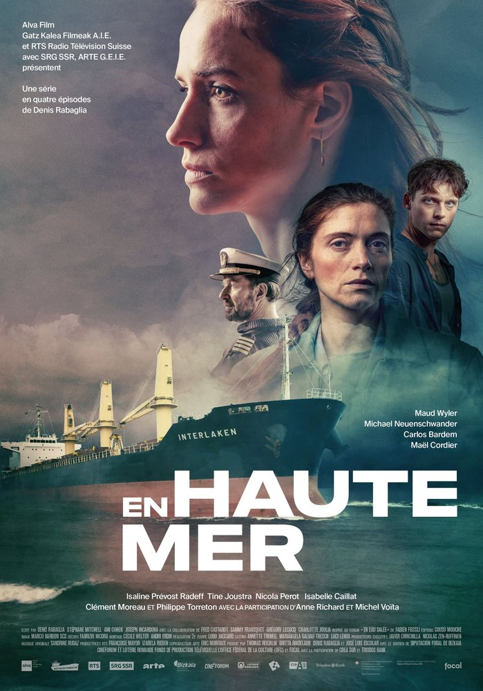
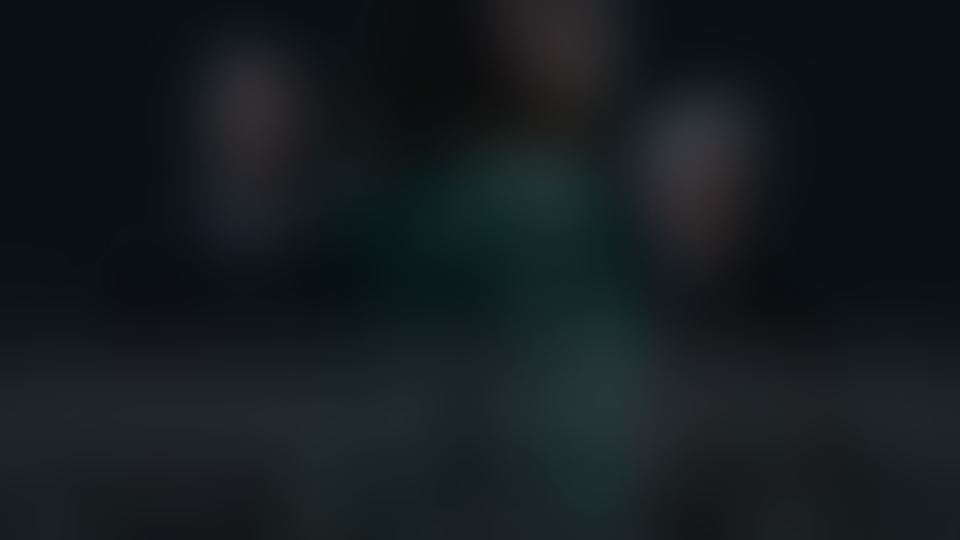
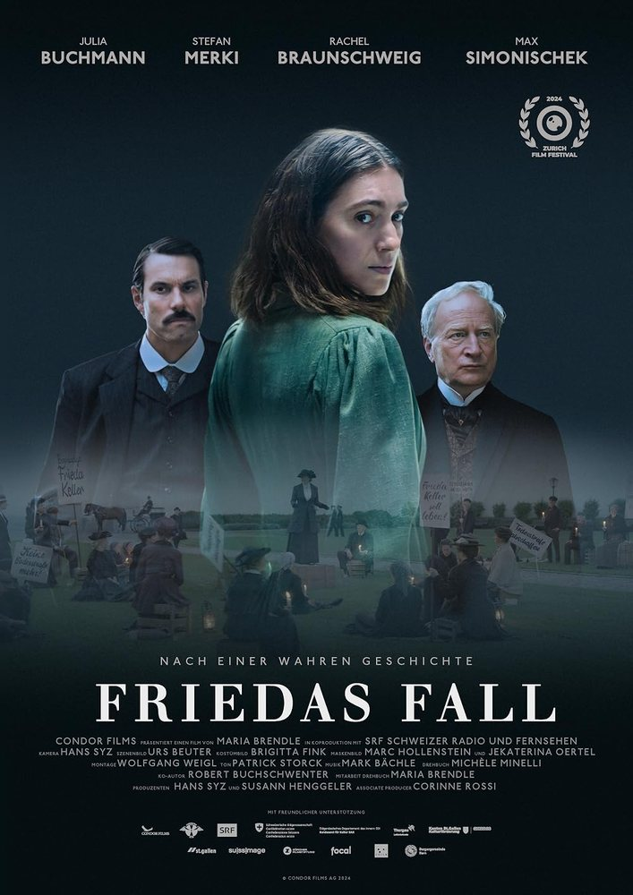
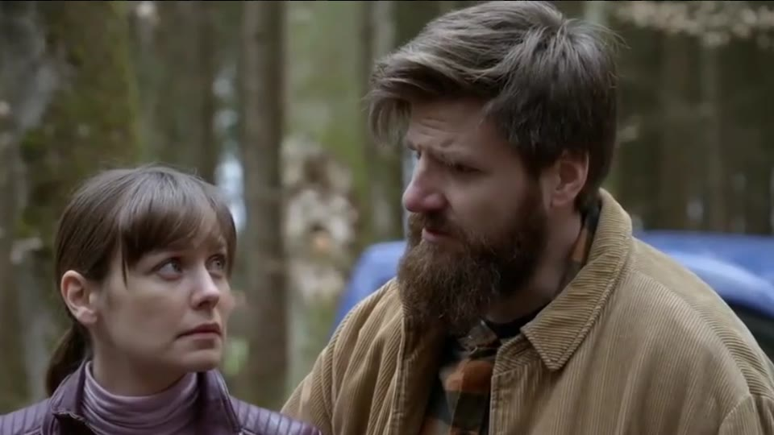
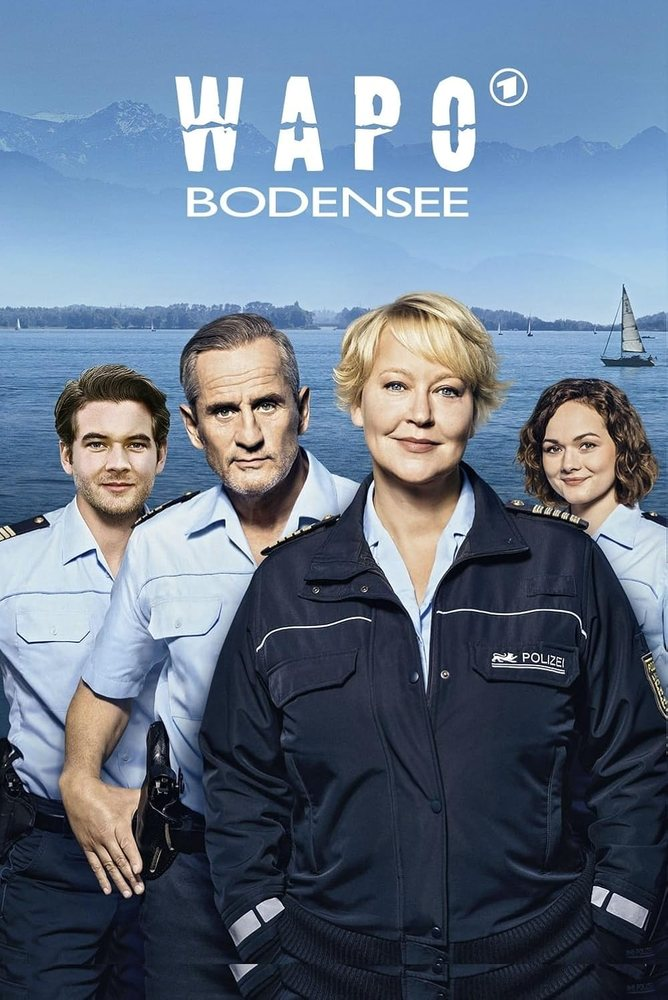
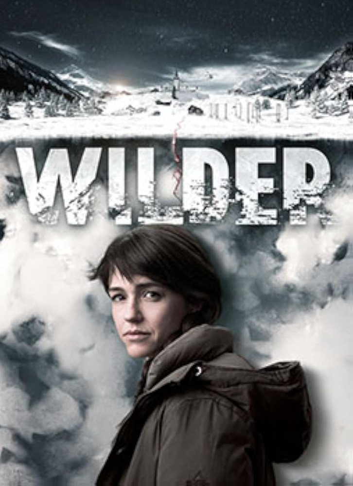
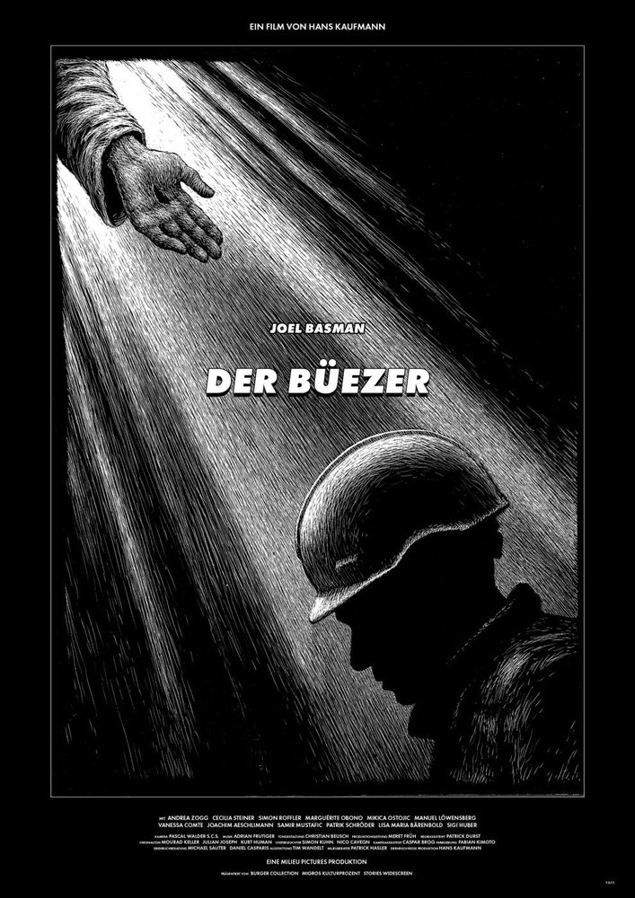

Szene aus AUF HOHER SEE
Zur Person
Mit 1,95 m und markanter Präsenz wird Simon Roffler oft für intensive Charaktere und kantige Rollen besetzt. Zugleich bringt er eine Wärme mit, die ihn auch als rechtschaffenen Ermittler oder vielschichtigen Familienvater glaubwürdig macht.
2027 wird er in der Sky-Serie «The Death of Sherlock Holmes» an der Seite von Rafe Spall zu sehen sein. Regie führten Claudia Bluemhuber und Pierre Monnard, mit dem er bereits die SRF-Serie «Wilder» gedreht hatte. In Denis Rabaglias Miniserie «Auf hoher See» spielte er einen kriminellen Chefingenieur neben Carlos Bardem. Im Kinofilm «Friedas Fall» der Oscar-nominierten Regisseurin Maria Brendle spielte er den Landjäger Maier.
Simon Roffler wuchs im Zürcher Oberland auf, wo Kühe direkt vor dem Haus weideten. Den Humor und die Lust am Spielen hat er von seiner Mutter geerbt, die an Familienfesten für Unterhaltung sorgte. Am Esstisch probierte er seine ersten Comedy-Einlagen an seiner jüngeren Schwester aus – so erfolgreich, dass die beiden schliesslich in getrennten Räumen essen mussten.
Nach der Oberstufe machte er eine Informatiklehre und tauschte in dieser Zeit den E-Sport gegen das Laientheater. Als er dort eine Hauptrolle übernahm, entdeckte er seine Liebe zum Schauspiel, die ihn nicht mehr losliess. Neben der Arbeit in der IT sprach er zwei Jahre lang vor, bis ihn die Hochschule der Künste Bern (HKB) aufnahm. Noch während des Studiums stand er am Theater Basel in Philipp Stölzls «Frankenstein» auf der Bühne. Später spielte er am Theater der Künste in Zürich die Titelrolle in «Adams Äpfel».
Ein wichtiger Schritt hin zur Arbeit vor der Kamera war seine Rolle als David Nagel in Hans Kaufmanns Kinofilm «Der Büezer» mit Joel Basman. Danach war die Richtung klar: Seither konzentriert er sich ganz auf Film und Serie. Um sich weiterzuentwickeln, besucht er regelmässig das Giles Foreman Centre for Acting in London. Für actionreiche Rollen bereitet er sich mit einem Stunttraining auf die jeweilige Produktion vor.
Simon Roffler lebt in Zürich und darf in der Schweiz wie in der EU arbeiten.
Credits (Auswahl)
- 2027The Death of Sherlock Holmesals Kaspar Zwirgi
- 2026Begegnung mit einem Mörderals Arne Kleinert
- 2025Auf hoher Seeals Thorsten
- 2024Friedas FallKinofilm · als Landjäger Maier
- 2024Der Zufallsmörderals Robert Leuschner
- 2021WAPO Bodenseeals Benjamin Weiss
- 2020Wilderals Eric Genarro
- 2020Bis dass der Tod euch scheidetals Hermann Studer
- 2019Der BüezerKinofilm · als David Nagel
- Grösse
- 195 cm
- Sprachen
- Deutsch, Schweizerdeutsch, Englisch
- Wohnort
- Zürich
- Arbeitserlaubnis
- Schweiz und EU
- Ausbildung
- Hochschule der Künste Bern (HKB); Giles Foreman Centre for Acting, London
- Fähigkeiten
- Boxen, Krafttraining, Stunttraining


Showreel
Produktionen

The Death of Sherlock Holmes











Kontakt
Vertretung
Deutschsprachiger Raum
ABRAHAM MANAGEMENTVoltaireweg 9
14469 Potsdam
+49 331 87 70 50 90
office@abraham-management.de
abraham-management.de